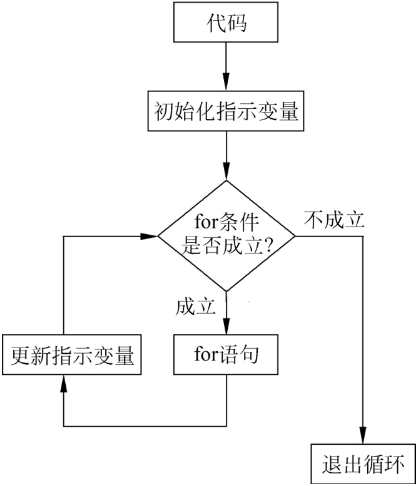

首页 > 编程笔记
JavaScript for循环用法详解
JavaScript for 循环语句与 while 循环语句的区别在于条件，for 循环的条件支持三项内容：初始化语句、条件判断语句和循环后操作语句，并且每个语句之间使用分号隔开。
JavaScript for 循环的执行过程如图1所示。
for 循环的语法结构如下：
for 循环的这种结构适合计数循环，即需要一个指示变量来提示当前进行的是第几次循环，或者使用指示变量的值（例如循环访问数组中的元素），这样可以在初始化语句中，初始化一个指示变量，然后设立退出条件，最后设置每次循环后对指示变量进行的操作。
例如打印出 1~10 的值，代码如下：
上述代码也可以转换为 while 形式，代码如下：
循环语句也可以进行嵌套，从而形成双层或多层循环，不过非必要情况下不建议这样做，因为多层循环在严重情况下会使代码的效率呈指数级下降。
例如计算 1~10，与 5~10 每个数的乘积，它会执行 60 次，代码如下：
JavaScript for 循环的执行过程如图1所示。

图1：for 循环执行过程
图1：for 循环执行过程
for 循环的语法结构如下：
for(初始化语句; 条件判断语句; 循环后操作语句){
语句块;
}
for 循环的这种结构适合计数循环，即需要一个指示变量来提示当前进行的是第几次循环，或者使用指示变量的值（例如循环访问数组中的元素），这样可以在初始化语句中，初始化一个指示变量，然后设立退出条件，最后设置每次循环后对指示变量进行的操作。
例如打印出 1~10 的值，代码如下：
for(let i=1;i<=10;i++){
console.log(i);
}
一般地，对于指示变量的命名，推荐使用 i、j、k 等小写字母依次进行命名。上述代码也可以转换为 while 形式，代码如下：
let i= 1;
while(i<=10){
console.log(i++);
}
可以看出，while 循环对于计数类的操作不如 for 循环简洁。循环语句也可以进行嵌套，从而形成双层或多层循环，不过非必要情况下不建议这样做，因为多层循环在严重情况下会使代码的效率呈指数级下降。
例如计算 1~10，与 5~10 每个数的乘积，它会执行 60 次，代码如下：
for(let i=1; i<=10; i++){
for(let j=5; j<=10; j++){
console.log("i * j = ", i*j);
}
}
其他与 for 有关的循环语句还有 for in 和 for of，分别可以用于遍历（Iterate，访问所有内容）对象的属性和数组的元素。关注公众号「站长严长生」，在手机上阅读所有教程，随时随地都能学习。内含一款搜索神器，免费下载全网书籍和视频。

微信扫码关注公众号